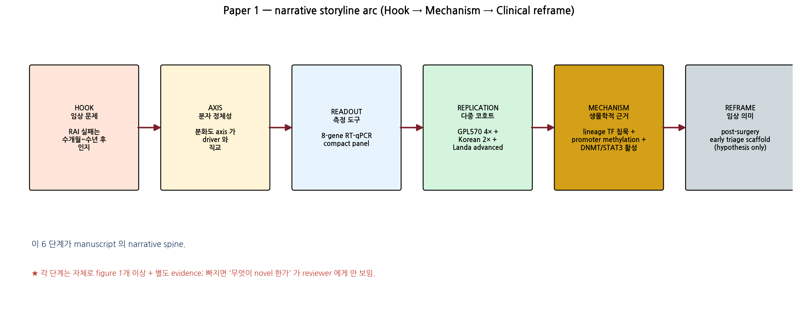

2. Storyline arc — narrative spine

Fig 11. 6 단 narrative spine. 각 단계는 자체로 figure 1 개 이상 + 별도 evidence; 빠지면 reviewer 가 "무엇이 novel 한가" 못 잡음.
1
HOOK — 임상 문제: RAI 실패 인지에 6-12 개월 + 분자적 위험 측정 도구 부재. 수술 직후 시점에 위험을 알 수 있다면? → 모든 paper 의 *이유*.
2
AXIS — 분자 정체성: driver mutation (BRAF/RAS/TERT) 만으로는 정의 안 되는 *분화도* 라는 직교 차원이 있다. → driver-orthogonal 이라는 *novel discovery*.
3
READOUT — 측정 도구: 67-gene 큰 panel 로 axis 가 정의되지만, 임상 deploy 를 위해 *8-gene compact RT-qPCR panel* 로 압축. AUC 0.962 (16-gene 대비 ΔAUC 0.013 NS).
4
REPLICATION — 다중 코호트: GPL570 4 cohort + Korean K2/Lee 2024 (n=874+) + Landa MSK-IMPACT advanced + Pu 2021 single-cell. ρ ≤ −0.84 zero-overlap defense.
5
MECHANISM — 생물학적 근거: lineage TF backbone 침묵 → DNMT/STAT3/AP-1 활성 → promoter methylation → RAI 흡수 machinery 침묵. TPO d=2.30, β +52%.
6
REFRAME — 임상 의미: 8-gene readout 으로 수술 직후 분자 위험을 측정 → RAI 실패 biology 의 조기 flag 가능성. candidate triage scaffold (hypothesis only).
★ 핵심 narrative tension: "axis 발견 (discovery)" vs "panel 압축 (deployment)" 의 2-layer architecture 를 reviewer 가 받아들여야 ARI 0.49 약점이 강점으로 reframe 됨.